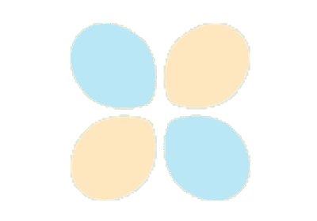

通过示例学习 PyTorch
原文：https://pytorch.org/tutorials/beginner/pytorch_with_examples.html
本教程通过独立的示例介绍 PyTorch 的基本概念。
PyTorch 的核心是提供两个主要功能：
- n 维张量，类似于 NumPy，但可以在 GPU 上运行
- 用于构建和训练神经网络的自动微分
我们将使用将三阶多项式拟合y = sin(x)的问题作为运行示例。 该网络将具有四个参数，并且将通过使网络输出与实际输出之间的欧几里德距离最小化来进行梯度下降训练，以适应随机数据。
注意
您可以在本页浏览各个示例。
张量
预热：NumPy
在介绍 PyTorch 之前，我们将首先使用 numpy 实现网络。
Numpy 提供了一个 n 维数组对象，以及许多用于操纵这些数组的函数。 Numpy 是用于科学计算的通用框架。 它对计算图，深度学习或梯度一无所知。 但是，通过使用 numpy 操作手动实现网络的前向和后向传递，我们可以轻松地使用 numpy 使三阶多项式适合正弦函数：
# -*- coding: utf-8 -*-
import numpy as np
import math
# Create random input and output data
x = np.linspace(-math.pi, math.pi, 2000)
y = np.sin(x)
# Randomly initialize weights
a = np.random.randn()
b = np.random.randn()
c = np.random.randn()
d = np.random.randn()
learning_rate = 1e-6
for t in range(2000):
# Forward pass: compute predicted y
# y = a + b x + c x^2 + d x^3
y_pred = a + b * x + c * x ** 2 + d * x ** 3
# Compute and print loss
loss = np.square(y_pred - y).sum()
if t % 100 == 99:
print(t, loss)
# Backprop to compute gradients of a, b, c, d with respect to loss
grad_y_pred = 2.0 * (y_pred - y)
grad_a = grad_y_pred.sum()
grad_b = (grad_y_pred * x).sum()
grad_c = (grad_y_pred * x ** 2).sum()
grad_d = (grad_y_pred * x ** 3).sum()
# Update weights
a -= learning_rate * grad_a
b -= learning_rate * grad_b
c -= learning_rate * grad_c
d -= learning_rate * grad_d
print(f'Result: y = {a} + {b} x + {c} x^2 + {d} x^3')
PyTorch：张量
Numpy 是一个很棒的框架，但是它不能利用 GPU 来加速其数值计算。 对于现代深度神经网络，GPU 通常会提供 50 倍或更高的加速，因此遗憾的是，numpy 不足以实现现代深度学习。
在这里，我们介绍最基本的 PyTorch 概念：张量。 PyTorch 张量在概念上与 numpy 数组相同：张量是 n 维数组，PyTorch 提供了许多在这些张量上进行操作的函数。 在幕后，张量可以跟踪计算图和梯度，但它们也可用作科学计算的通用工具。
与 numpy 不同，PyTorch 张量可以利用 GPU 加速其数字计算。 要在 GPU 上运行 PyTorch 张量，您只需要指定正确的设备即可。
在这里，我们使用 PyTorch 张量将三阶多项式拟合为正弦函数。 像上面的 numpy 示例一样，我们需要手动实现通过网络的正向和反向传递：
# -*- coding: utf-8 -*-
import torch
import math
dtype = torch.float
device = torch.device("cpu")
# device = torch.device("cuda:0") # Uncomment this to run on GPU
# Create random input and output data
x = torch.linspace(-math.pi, math.pi, 2000, device=device, dtype=dtype)
y = torch.sin(x)
# Randomly initialize weights
a = torch.randn((), device=device, dtype=dtype)
b = torch.randn((), device=device, dtype=dtype)
c = torch.randn((), device=device, dtype=dtype)
d = torch.randn((), device=device, dtype=dtype)
learning_rate = 1e-6
for t in range(2000):
# Forward pass: compute predicted y
y_pred = a + b * x + c * x ** 2 + d * x ** 3
# Compute and print loss
loss = (y_pred - y).pow(2).sum().item()
if t % 100 == 99:
print(t, loss)
# Backprop to compute gradients of a, b, c, d with respect to loss
grad_y_pred = 2.0 * (y_pred - y)
grad_a = grad_y_pred.sum()
grad_b = (grad_y_pred * x).sum()
grad_c = (grad_y_pred * x ** 2).sum()
grad_d = (grad_y_pred * x ** 3).sum()
# Update weights using gradient descent
a -= learning_rate * grad_a
b -= learning_rate * grad_b
c -= learning_rate * grad_c
d -= learning_rate * grad_d
print(f'Result: y = {a.item()} + {b.item()} x + {c.item()} x^2 + {d.item()} x^3')
Autograd
PyTorch：张量和 Autograd
在上述示例中，我们必须手动实现神经网络的前向和后向传递。 对于小型的两层网络，手动实现反向传递并不是什么大问题，但是对于大型的复杂网络来说，可以很快变得非常麻烦。
幸运的是，我们可以使用自动微分来自动计算神经网络中的反向传递。 PyTorch 中的 Autograd 包正是提供了此功能。 使用 Autograd 时，网络的正向传播将定义计算图； 图中的节点为张量，边为从输入张量产生输出张量的函数。 然后通过该图进行反向传播，可以轻松计算梯度。
这听起来很复杂，在实践中非常简单。 每个张量代表计算图中的一个节点。 如果x是具有x.requires_grad=True的张量，则x.grad是另一个张量，其保持x相对于某个标量值的梯度。
在这里，我们使用 PyTorch 张量和 Autograd 来实现我们的正弦波与三阶多项式示例； 现在我们不再需要通过网络手动实现反向传递：
# -*- coding: utf-8 -*-
import torch
import math
dtype = torch.float
device = torch.device("cpu")
# device = torch.device("cuda:0") # Uncomment this to run on GPU
# Create Tensors to hold input and outputs.
# By default, requires_grad=False, which indicates that we do not need to
# compute gradients with respect to these Tensors during the backward pass.
x = torch.linspace(-math.pi, math.pi, 2000, device=device, dtype=dtype)
y = torch.sin(x)
# Create random Tensors for weights. For a third order polynomial, we need
# 4 weights: y = a + b x + c x^2 + d x^3
# Setting requires_grad=True indicates that we want to compute gradients with
# respect to these Tensors during the backward pass.
a = torch.randn((), device=device, dtype=dtype, requires_grad=True)
b = torch.randn((), device=device, dtype=dtype, requires_grad=True)
c = torch.randn((), device=device, dtype=dtype, requires_grad=True)
d = torch.randn((), device=device, dtype=dtype, requires_grad=True)
learning_rate = 1e-6
for t in range(2000):
# Forward pass: compute predicted y using operations on Tensors.
y_pred = a + b * x + c * x ** 2 + d * x ** 3
# Compute and print loss using operations on Tensors.
# Now loss is a Tensor of shape (1,)
# loss.item() gets the scalar value held in the loss.
loss = (y_pred - y).pow(2).sum()
if t % 100 == 99:
print(t, loss.item())
# Use autograd to compute the backward pass. This call will compute the
# gradient of loss with respect to all Tensors with requires_grad=True.
# After this call a.grad, b.grad. c.grad and d.grad will be Tensors holding
# the gradient of the loss with respect to a, b, c, d respectively.
loss.backward()
# Manually update weights using gradient descent. Wrap in torch.no_grad()
# because weights have requires_grad=True, but we don't need to track this
# in autograd.
with torch.no_grad():
a -= learning_rate * a.grad
b -= learning_rate * b.grad
c -= learning_rate * c.grad
d -= learning_rate * d.grad
# Manually zero the gradients after updating weights
a.grad = None
b.grad = None
c.grad = None
d.grad = None
print(f'Result: y = {a.item()} + {b.item()} x + {c.item()} x^2 + {d.item()} x^3')
PyTorch：定义新的 Autograd 函数
在幕后，每个原始的 Autograd 运算符实际上都是在张量上运行的两个函数。 正向函数从输入张量计算输出张量。 反向函数接收相对于某个标量值的输出张量的梯度，并计算相对于相同标量值的输入张量的梯度。
在 PyTorch 中，我们可以通过定义torch.autograd.Function的子类并实现forward和backward函数来轻松定义自己的 Autograd 运算符。 然后，我们可以通过构造实例并像调用函数一样调用新的 Autograd 运算符，并传递包含输入数据的张量。
在此示例中，我们将模型定义为y = a + b P[3](c + dx)而不是y = a + bx + cx ^ 2 + dx ^ 3，其中P[3](x) = 1/2 (5x ^ 3 - 3x)是三次的勒让德多项式。 我们编写了自己的自定义 Autograd 函数来计算P[3]的前进和后退，并使用它来实现我们的模型：
# -*- coding: utf-8 -*-
import torch
import math
class LegendrePolynomial3(torch.autograd.Function):
"""
We can implement our own custom autograd Functions by subclassing
torch.autograd.Function and implementing the forward and backward passes
which operate on Tensors.
"""
@staticmethod
def forward(ctx, input):
"""
In the forward pass we receive a Tensor containing the input and return
a Tensor containing the output. ctx is a context object that can be used
to stash information for backward computation. You can cache arbitrary
objects for use in the backward pass using the ctx.save_for_backward method.
"""
ctx.save_for_backward(input)
return 0.5 * (5 * input ** 3 - 3 * input)
@staticmethod
def backward(ctx, grad_output):
"""
In the backward pass we receive a Tensor containing the gradient of the loss
with respect to the output, and we need to compute the gradient of the loss
with respect to the input.
"""
input, = ctx.saved_tensors
return grad_output * 1.5 * (5 * input ** 2 - 1)
dtype = torch.float
device = torch.device("cpu")
# device = torch.device("cuda:0") # Uncomment this to run on GPU
# Create Tensors to hold input and outputs.
# By default, requires_grad=False, which indicates that we do not need to
# compute gradients with respect to these Tensors during the backward pass.
x = torch.linspace(-math.pi, math.pi, 2000, device=device, dtype=dtype)
y = torch.sin(x)
# Create random Tensors for weights. For this example, we need
# 4 weights: y = a + b * P3(c + d * x), these weights need to be initialized
# not too far from the correct result to ensure convergence.
# Setting requires_grad=True indicates that we want to compute gradients with
# respect to these Tensors during the backward pass.
a = torch.full((), 0.0, device=device, dtype=dtype, requires_grad=True)
b = torch.full((), -1.0, device=device, dtype=dtype, requires_grad=True)
c = torch.full((), 0.0, device=device, dtype=dtype, requires_grad=True)
d = torch.full((), 0.3, device=device, dtype=dtype, requires_grad=True)
learning_rate = 5e-6
for t in range(2000):
# To apply our Function, we use Function.apply method. We alias this as 'P3'.
P3 = LegendrePolynomial3.apply
# Forward pass: compute predicted y using operations; we compute
# P3 using our custom autograd operation.
y_pred = a + b * P3(c + d * x)
# Compute and print loss
loss = (y_pred - y).pow(2).sum()
if t % 100 == 99:
print(t, loss.item())
# Use autograd to compute the backward pass.
loss.backward()
# Update weights using gradient descent
with torch.no_grad():
a -= learning_rate * a.grad
b -= learning_rate * b.grad
c -= learning_rate * c.grad
d -= learning_rate * d.grad
# Manually zero the gradients after updating weights
a.grad = None
b.grad = None
c.grad = None
d.grad = None
print(f'Result: y = {a.item()} + {b.item()} * P3({c.item()} + {d.item()} x)')
nn模块
PyTorch：nn
计算图和 Autograd 是定义复杂运算符并自动采用导数的非常强大的范例。 但是对于大型神经网络，原始的 Autograd 可能会太低级。
在构建神经网络时，我们经常想到将计算安排在层中，其中某些层具有可学习的参数，这些参数会在学习期间进行优化。
在 TensorFlow 中，像 Keras ， TensorFlow-Slim 和 TFLearn 之类的包在原始计算图上提供了更高层次的抽象，可用于构建神经网络。
在 PyTorch 中，nn包也达到了相同的目的。 nn包定义了一组模块，它们大致等效于神经网络层。 模块接收输入张量并计算输出张量，但也可以保持内部状态，例如包含可学习参数的张量。 nn包还定义了一组有用的损失函数，这些函数通常在训练神经网络时使用。
在此示例中，我们使用nn包来实现我们的多项式模型网络：
# -*- coding: utf-8 -*-
import torch
import math
# Create Tensors to hold input and outputs.
x = torch.linspace(-math.pi, math.pi, 2000)
y = torch.sin(x)
# For this example, the output y is a linear function of (x, x^2, x^3), so
# we can consider it as a linear layer neural network. Let's prepare the
# tensor (x, x^2, x^3).
p = torch.tensor([1, 2, 3])
xx = x.unsqueeze(-1).pow(p)
# In the above code, x.unsqueeze(-1) has shape (2000, 1), and p has shape
# (3,), for this case, broadcasting semantics will apply to obtain a tensor
# of shape (2000, 3)
# Use the nn package to define our model as a sequence of layers. nn.Sequential
# is a Module which contains other Modules, and applies them in sequence to
# produce its output. The Linear Module computes output from input using a
# linear function, and holds internal Tensors for its weight and bias.
# The Flatten layer flatens the output of the linear layer to a 1D tensor,
# to match the shape of `y`.
model = torch.nn.Sequential(
torch.nn.Linear(3, 1),
torch.nn.Flatten(0, 1)
)
# The nn package also contains definitions of popular loss functions; in this
# case we will use Mean Squared Error (MSE) as our loss function.
loss_fn = torch.nn.MSELoss(reduction='sum')
learning_rate = 1e-6
for t in range(2000):
# Forward pass: compute predicted y by passing x to the model. Module objects
# override the __call__ operator so you can call them like functions. When
# doing so you pass a Tensor of input data to the Module and it produces
# a Tensor of output data.
y_pred = model(xx)
# Compute and print loss. We pass Tensors containing the predicted and true
# values of y, and the loss function returns a Tensor containing the
# loss.
loss = loss_fn(y_pred, y)
if t % 100 == 99:
print(t, loss.item())
# Zero the gradients before running the backward pass.
model.zero_grad()
# Backward pass: compute gradient of the loss with respect to all the learnable
# parameters of the model. Internally, the parameters of each Module are stored
# in Tensors with requires_grad=True, so this call will compute gradients for
# all learnable parameters in the model.
loss.backward()
# Update the weights using gradient descent. Each parameter is a Tensor, so
# we can access its gradients like we did before.
with torch.no_grad():
for param in model.parameters():
param -= learning_rate * param.grad
# You can access the first layer of `model` like accessing the first item of a list
linear_layer = model[0]
# For linear layer, its parameters are stored as `weight` and `bias`.
print(f'Result: y = {linear_layer.bias.item()} + {linear_layer.weight[:, 0].item()} x + {linear_layer.weight[:, 1].item()} x^2 + {linear_layer.weight[:, 2].item()} x^3')
PyTorch：optim
到目前为止，我们已经通过使用torch.no_grad()手动更改持有可学习参数的张量来更新模型的权重。 对于像随机梯度下降这样的简单优化算法来说，这并不是一个巨大的负担，但是在实践中，我们经常使用更复杂的优化器（例如 AdaGrad，RMSProp，Adam 等）来训练神经网络。
PyTorch 中的optim包抽象了优化算法的思想，并提供了常用优化算法的实现。
在此示例中，我们将使用nn包像以前一样定义我们的模型，但是我们将使用optim包提供的 RMSprop 算法来优化模型：
# -*- coding: utf-8 -*-
import torch
import math
# Create Tensors to hold input and outputs.
x = torch.linspace(-math.pi, math.pi, 2000)
y = torch.sin(x)
# Prepare the input tensor (x, x^2, x^3).
p = torch.tensor([1, 2, 3])
xx = x.unsqueeze(-1).pow(p)
# Use the nn package to define our model and loss function.
model = torch.nn.Sequential(
torch.nn.Linear(3, 1),
torch.nn.Flatten(0, 1)
)
loss_fn = torch.nn.MSELoss(reduction='sum')
# Use the optim package to define an Optimizer that will update the weights of
# the model for us. Here we will use RMSprop; the optim package contains many other
# optimization algorithms. The first argument to the RMSprop constructor tells the
# optimizer which Tensors it should update.
learning_rate = 1e-3
optimizer = torch.optim.RMSprop(model.parameters(), lr=learning_rate)
for t in range(2000):
# Forward pass: compute predicted y by passing x to the model.
y_pred = model(xx)
# Compute and print loss.
loss = loss_fn(y_pred, y)
if t % 100 == 99:
print(t, loss.item())
# Before the backward pass, use the optimizer object to zero all of the
# gradients for the variables it will update (which are the learnable
# weights of the model). This is because by default, gradients are
# accumulated in buffers( i.e, not overwritten) whenever .backward()
# is called. Checkout docs of torch.autograd.backward for more details.
optimizer.zero_grad()
# Backward pass: compute gradient of the loss with respect to model
# parameters
loss.backward()
# Calling the step function on an Optimizer makes an update to its
# parameters
optimizer.step()
linear_layer = model[0]
print(f'Result: y = {linear_layer.bias.item()} + {linear_layer.weight[:, 0].item()} x + {linear_layer.weight[:, 1].item()} x^2 + {linear_layer.weight[:, 2].item()} x^3')
PyTorch：自定义nn模块
有时，您将需要指定比一系列现有模块更复杂的模型。 对于这些情况，您可以通过子类化nn.Module并定义一个forward来定义自己的模块，该模块使用其他模块或在 Tensors 上的其他自动转换操作来接收输入 Tensors 并生成输出 Tensors。
在此示例中，我们将三阶多项式实现为自定义Module子类：
# -*- coding: utf-8 -*-
import torch
import math
class Polynomial3(torch.nn.Module):
def __init__(self):
"""
In the constructor we instantiate four parameters and assign them as
member parameters.
"""
super().__init__()
self.a = torch.nn.Parameter(torch.randn(()))
self.b = torch.nn.Parameter(torch.randn(()))
self.c = torch.nn.Parameter(torch.randn(()))
self.d = torch.nn.Parameter(torch.randn(()))
def forward(self, x):
"""
In the forward function we accept a Tensor of input data and we must return
a Tensor of output data. We can use Modules defined in the constructor as
well as arbitrary operators on Tensors.
"""
return self.a + self.b * x + self.c * x ** 2 + self.d * x ** 3
def string(self):
"""
Just like any class in Python, you can also define custom method on PyTorch modules
"""
return f'y = {self.a.item()} + {self.b.item()} x + {self.c.item()} x^2 + {self.d.item()} x^3'
# Create Tensors to hold input and outputs.
x = torch.linspace(-math.pi, math.pi, 2000)
y = torch.sin(x)
# Construct our model by instantiating the class defined above
model = Polynomial3()
# Construct our loss function and an Optimizer. The call to model.parameters()
# in the SGD constructor will contain the learnable parameters of the nn.Linear
# module which is members of the model.
criterion = torch.nn.MSELoss(reduction='sum')
optimizer = torch.optim.SGD(model.parameters(), lr=1e-6)
for t in range(2000):
# Forward pass: Compute predicted y by passing x to the model
y_pred = model(x)
# Compute and print loss
loss = criterion(y_pred, y)
if t % 100 == 99:
print(t, loss.item())
# Zero gradients, perform a backward pass, and update the weights.
optimizer.zero_grad()
loss.backward()
optimizer.step()
print(f'Result: {model.string()}')
PyTorch：控制流 + 权重共享
作为动态图和权重共享的示例，我们实现了一个非常奇怪的模型：一个三阶多项式，在每个正向传播中选择 3 到 5 之间的一个随机数，并使用该阶数，多次使用相同的权重重复计算四和五阶。
对于此模型，我们可以使用常规的 Python 流控制来实现循环，并且可以通过在定义正向传播时简单地多次重复使用相同的参数来实现权重共享。
我们可以轻松地将此模型实现为Module子类：
# -*- coding: utf-8 -*-
import random
import torch
import math
class DynamicNet(torch.nn.Module):
def __init__(self):
"""
In the constructor we instantiate five parameters and assign them as members.
"""
super().__init__()
self.a = torch.nn.Parameter(torch.randn(()))
self.b = torch.nn.Parameter(torch.randn(()))
self.c = torch.nn.Parameter(torch.randn(()))
self.d = torch.nn.Parameter(torch.randn(()))
self.e = torch.nn.Parameter(torch.randn(()))
def forward(self, x):
"""
For the forward pass of the model, we randomly choose either 4, 5
and reuse the e parameter to compute the contribution of these orders.
Since each forward pass builds a dynamic computation graph, we can use normal
Python control-flow operators like loops or conditional statements when
defining the forward pass of the model.
Here we also see that it is perfectly safe to reuse the same parameter many
times when defining a computational graph.
"""
y = self.a + self.b * x + self.c * x ** 2 + self.d * x ** 3
for exp in range(4, random.randint(4, 6)):
y = y + self.e * x ** exp
return y
def string(self):
"""
Just like any class in Python, you can also define custom method on PyTorch modules
"""
return f'y = {self.a.item()} + {self.b.item()} x + {self.c.item()} x^2 + {self.d.item()} x^3 + {self.e.item()} x^4 ? + {self.e.item()} x^5 ?'
# Create Tensors to hold input and outputs.
x = torch.linspace(-math.pi, math.pi, 2000)
y = torch.sin(x)
# Construct our model by instantiating the class defined above
model = DynamicNet()
# Construct our loss function and an Optimizer. Training this strange model with
# vanilla stochastic gradient descent is tough, so we use momentum
criterion = torch.nn.MSELoss(reduction='sum')
optimizer = torch.optim.SGD(model.parameters(), lr=1e-8, momentum=0.9)
for t in range(30000):
# Forward pass: Compute predicted y by passing x to the model
y_pred = model(x)
# Compute and print loss
loss = criterion(y_pred, y)
if t % 2000 == 1999:
print(t, loss.item())
# Zero gradients, perform a backward pass, and update the weights.
optimizer.zero_grad()
loss.backward()
optimizer.step()
print(f'Result: {model.string()}')
示例
您可以在此处浏览以上示例。
张量


Autograd


nn模块